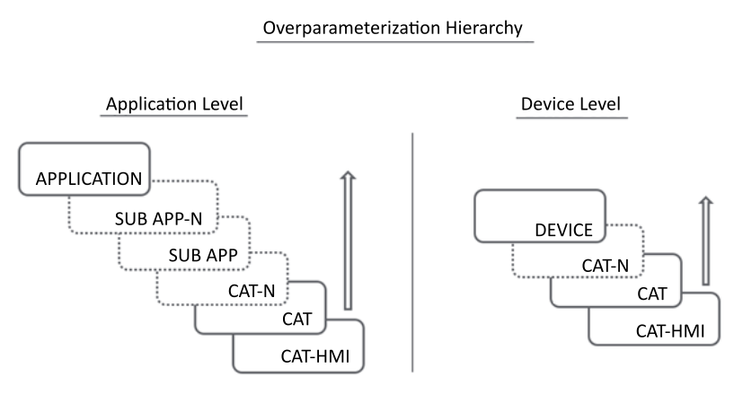

Offline Parameterization Editor
Use the Offline Parameterization editor to configure both data persistence and default value attributes for HMI output variables of CAT objects.
The parameter settings in this editor are configured offline. Once configured and deployed to the device, configured values are stored on the device and initialized the next time the device restarts.

|
To learn more about offline parameterization, watch How to Configure Offline Parameterization in EcoStruxure Automation Expert. |
Offline Parameterization
The Offline Parameterization editor can be accessed for CAT_HMI, CAT, and SubApp objects, and in the System editor for Application and Device level objects.
Filtering Offline Parameterization Objects
You can filter on the Name field for node objects and child node objects, their variables and parameters.
In the Name column header, click the filter symbol () to open a dialog with filtering settings:
-
Select All: to include all device objects; or
-
Select from a list of object node names; or
-
Select a value delimiter for text you will input:
-
Is equal to
-
Is not equal to
-
Starts with
-
Ends with
-
Contains
-
Does not contain
-
Is contained in
-
Is not contained in
Then input the delimiting alphanumeric characters.
Optionally, you can add a second value delimiter and combine it with the first via AND or OR.
-
Click Filter to apply the filter, and Clear Filter to remove the filter.
-
Use only one of the following value delimiters: "Contains" or "Is equal to".
-
Do not combine the "Contains" or "Is equal to" selection with another value delimiter.
Two Data Sets per Runtime Configuration
Each device maintains two sets of data:
-
Initial data: Contains data parameters – i.e. variables – and their default values as configured in the Offline Parameterization editor.
-
Persistence data: Contains data parameters and their persisted values for variables that have changed during runtime execution, for example by using an HMI.
Applying Default Variables
An HMI output variable’s Persist and Default Value settings - made in the Offline Parameterization Editor - determine the value that is applied on initialization when a device re-starts, as follows:
-
If a Default Value is not configured and Persist is de-selected: the data type default value is applied on initialization and displayed as the Default Value.
-
If the Default Value is configured and Persist is de-selected: the configured Default Value is applied.
-
If Persist is selected and the variable value has been changed during runtime (for example, by an HMI), the last modified value is re-applied.
Data Type Default Values
The following default values may be applied based on data type:
|
Data Type |
Default Value |
|---|---|
|
BOOL |
false |
|
SINT, DINT, LINT, USINT, UINT, UDINT, ULINT |
0 |
|
REAL, LREAL |
0.0 |
|
TIME |
TIME#0d_0h_0m_0s_0ms |
|
LTIME |
LTIME#0d_0h_0m_0s_0.0ms |
|
DATE, LDATE |
(L)DATE#1970-1-1 |
|
TIME_OF_DAY, LTIME_OF_DAY, TOD, LTOD |
(L)TIME_OF_DAY#00:00:00.00 |
|
DATE_AND_TIME, LDATE_AND_TIME, DT, LDT |
(L)DATE_AND_TIME#1970-1-1-0:0:0.0 |
|
STRING |
'' (empty string) |
Overparameterization
Overparameterization describes the ability to edit or override variable/CAT object attributes at different levels of the data structure. In the Offline Parameterization Editor, HMI output variable settings created at a child object level can be inherited by, and edited at, its parent object level. Persistence and default value attributes can be configured or Inherited in different levels as set forth in the following diagram, where:
-
dotted line outlines indicate optional objects
-
solid line outlines indicate necessary objects
-
-N indicates an index number for successive objects of the same type (e.g. CAT, CAT-1, CAT-2 and so forth).

For example, a variable in a child object might present a Default Value of N and a Persist setting of enabled, whereas a parent object that inherits the variable may configure a Default Value of N+1, and a Persist setting of disabled.
Limiting Overparameterization of HMI Output Variable Attributes
The following settings limit the ability of a parent object to overparameterize HMI output variable attributes created in a child object:
-
Mask: This setting limits the ability to edit values of the Persist attribute in derived objects. For example, a variable with Persist set to True only thereby restricts higher level object overparameterization to this value.
-
Locked: The value of a locked attribute cannot be edited in a a derived object.
Managing Default Value Attribute Settings
Troubleshooting Invalid Default Values
When an invalid value is input as the Default Value, the cell displays a red border. Place your cursor on the cell to display a tooltip that explaining why the value is invalid (e.g., wrong data type, value out of range, and so forth).
Resetting Default Values
When an output variable’s Default Value is modified with other than the data type default value, the edited value is displayed in bold and the cell displays the icon indicating the value has been modified. Click on this icon to restore the default value, which depends upon the variable level as follows:
-
for a CAT_HMI (lowest level) output variables, the data type default value is restored.
-
for CAT, SubApp, Application and Device (higher level) output variables, the base default value, i.e. the default value inherited from the immediate child object in the hierarchy, is restored.